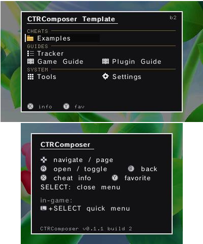
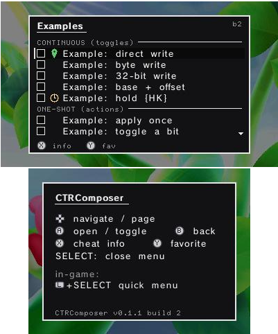
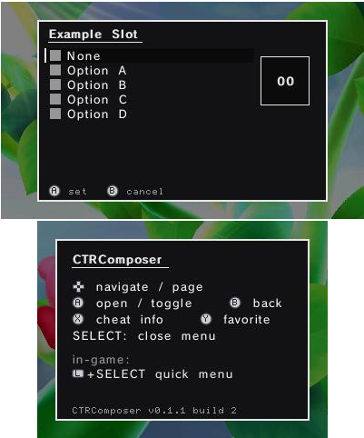
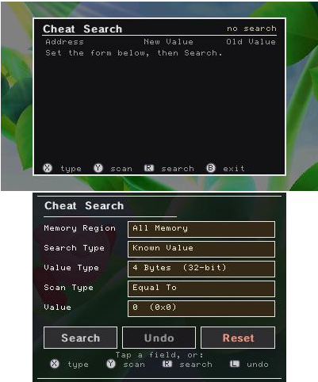
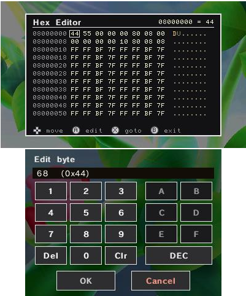
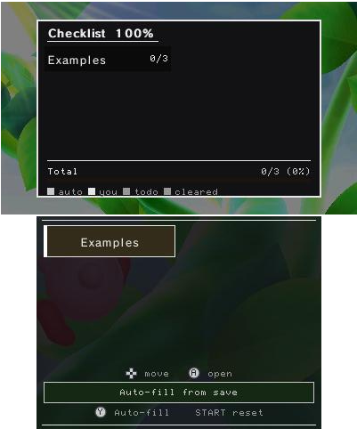
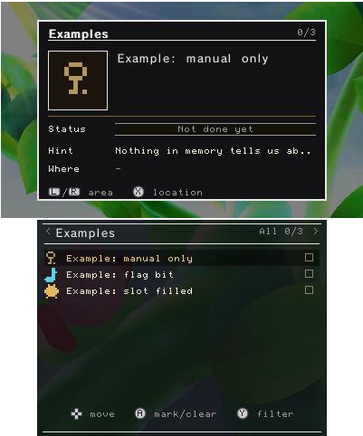
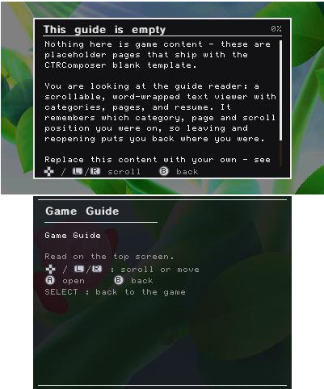
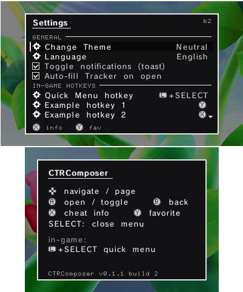
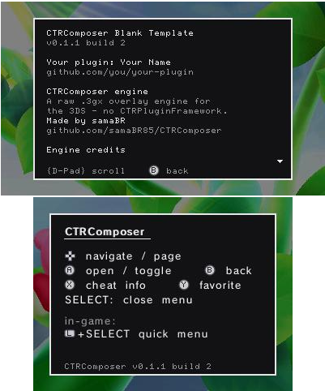

A raw .3gx overlay engine for the Nintendo 3DS — and a buildable
blank template for making a cheat/overlay plugin for any game.

A C plugin that draws its own UI straight to the framebuffer.
It runs inside the game's process, so writing memory is just a pointer, and it renders everything itself — window, system font, menus, tools. That makes a plugin self-contained and portable across games and across Luma3DS versions: there are no hook-wrapper addresses or per-game assumptions to line up.
About 90% of the code is game-independent. A new plugin is essentially a cheat table + art + Title ID. This repository is the blank half: the whole engine, with the game removed.
It ships with zero game art and zero game addresses. The example cheats
are inert — they write nothing until you set EXAMPLE_ENABLED to 1 and fill in
real addresses. The button glyphs are original, generated from primitives by a script in
the repo.
Real captures of this template. The game behind the window is just whatever title it was loaded into — none of its data is used.








.3gx.
All optional, all yours to configure or delete.
{A} in any string and the real console icon renders, in both font sizes, and it survives translation.T("English") with graceful fallback; partial translations just show English.One .3gx per plugin folder, named for your game's Title ID.
sd:/luma/plugins/<TitleID>/CTRComposer-BlankTemplate.3gxEnable the plugin loader in Rosalina (L + ↓ + Select → Plugin Loader), launch the game, then press SELECT. Keep the 3D slider at zero: the overlay renders to one framebuffer pair, so stereoscopic 3D will ghost it.
devkitARM + 3gxtool. Build from a path with no spaces — the toolchain breaks on them.
git clone https://github.com/samaBR85/CTRComposer.git
cd CTRComposer
make